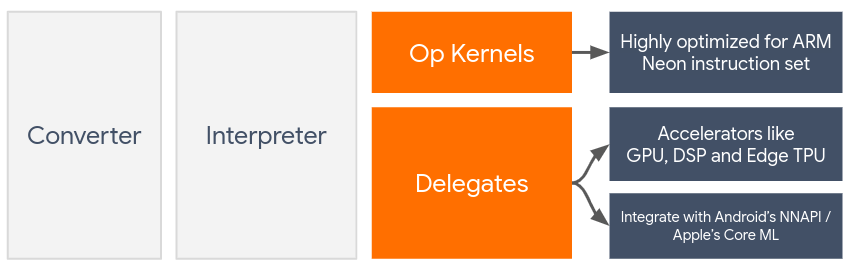
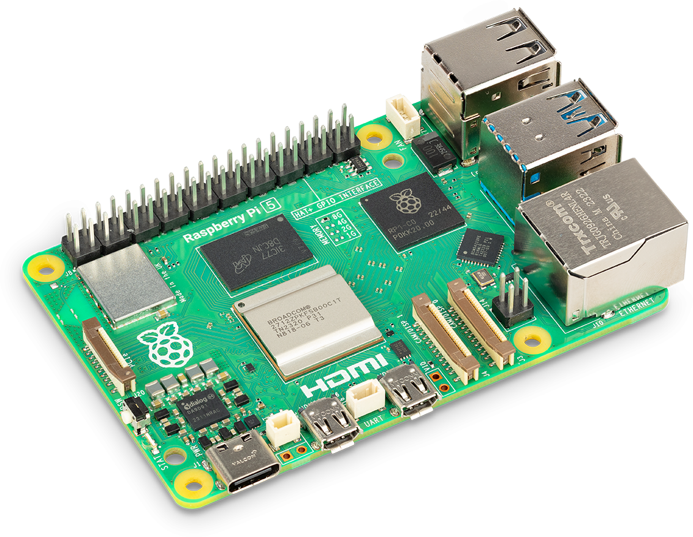
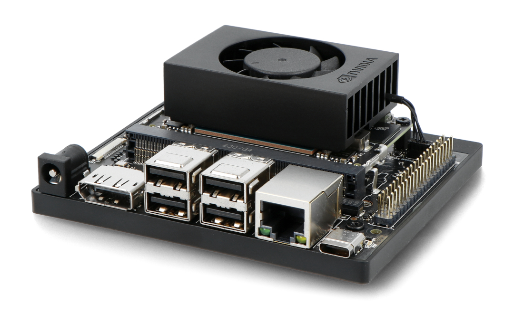
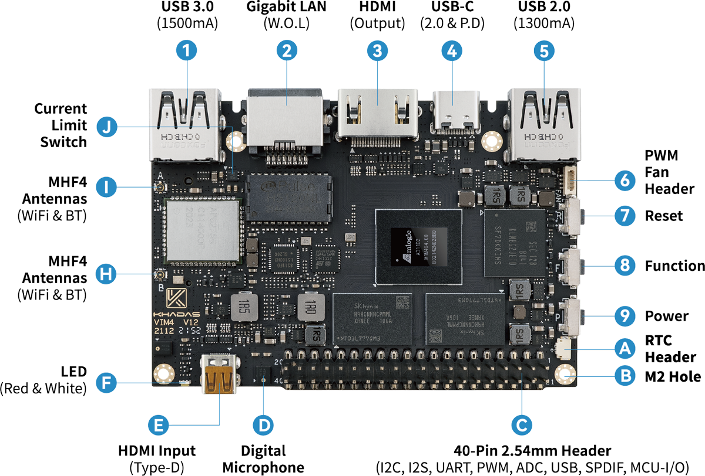
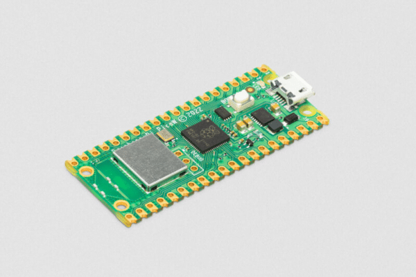
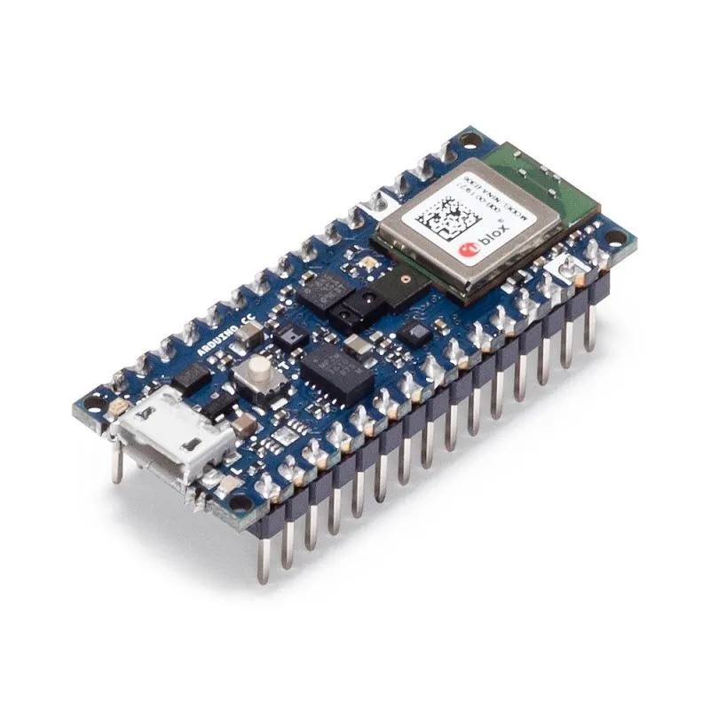
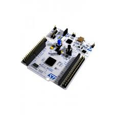
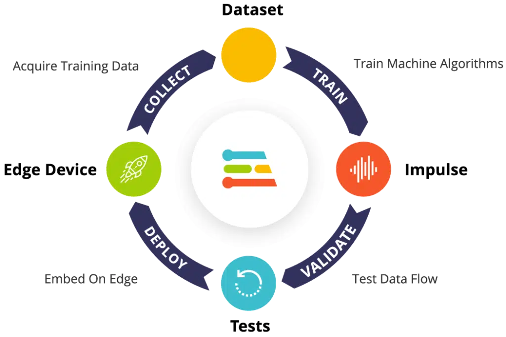

Inteligência Artificial e Machine Learning
Tensor Flow Lite e TinyML Inteligência Artificial para sistemas embarcados e microcontroladores
Prof. Me. Gustavo Ferreira Palma
Pauta:
Tensorflow Lite e TinyML
Aplicações
Tensorflow Lite e TinyML
- Ao contrário do que o senso comum trás nem sempre é necessário utilizar super computadores para a execução
de soluções baseadas em inteligência artificial;
- Dentre as plataformas mais populares temos: Tensorflow Lite e o TinyML;
- O Tensorflow Lite é um framework muito comum, presente em smartphones tanto Android como iOS, e em
sistemas embarcados baseados em Linux.
- o TinyML é um framework que une algumas técnicas tradicionais de machine learning com as ferramentas para
sua otimização e compatibilidade para microcontroladores de 32-bits. Note que a principal diferença do
TinyML para os frameworks, e bibliotecas, tradicionais, é a compatibilidade com processadores que possuem
ainda menos requisitos computacionais.
Tensorflow Lite e TinyML

Figura 1: Fluxo de execução do tensorflow Lite
Tensorflow Lite e TinyML

Figura 2: Raspberry Pi

Figura 3: Jetson Orin Nano

Figura 4: Khadas VIM4
Tensorflow Lite e TinyML
- Mesmo o Tensorflow Lite sendo um framework desenvolvido para ambentes reduzidos, ele tem alguns requisitos elevados, quando comparado ao TinyML;
- O Tensorflow Lite, demanda um sistema operacional de propósito geral, como distribuições Linux, Windows, MacOS, Android e iOS
- O que naturalmente demanda, mais recursos computacionais, como memória RAM e capacidade de processamento
- O TinyML ao contrário, pode ser executado em computadores muito mais singelos, como microcontroladores, por exemplo.
Tensorflow Lite e TinyML

Figura 5: Raspberry Pi Pico

Figura 6: Arduino Nano BLE

Figura 7: STM32 Nucleo Board
Tensorflow Lite e TinyML

Figura 8: processo de desenvolvimento com TinyML
OBRIGADO!
Podem me encontrar aqui:
- gustavo.palma@unisal.br
- www.gustavopalma.com.br